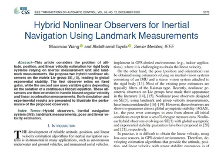
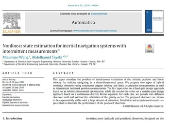

Miaomiao Wang (王苗苗)
 |
Postdoc Associate |
About Me
I am currently a postdoc associate with the Department of Electrical and Computer Engineering, Western University, under the supervision of Prof. Abdelhamid Tayebi.
I received my B.Eng. degree in Control Science and Engineering from Huazhong University of Science and Technology, China, in 2013, my M.Sc. degree in Control Engineering from Lakehead University, Canada, in 2015, and my Ph.D. degree in Robotics and Control Engineering from Western University, Canada, in 2020.
My current research interests are in the areas of nonlinear state estimation and control with applications to autonomous robotics including
-
Nonlinear State Estimation for Inertial Navigation Systems (INSs)
-
Geometric control of autonomous robotic vehicles
-
Coordination of multi-robot systems
Selected Publications

|
 |  |
Selected Journal Articles
-
Miaomiao Wang and A. Tayebi, "Hybrid feedback for global attitude tracking",
IEEE Transactions on Automatic Control, submitted, 2020. PDF -
Miaomiao Wang, S. Berkane, and A. Tayebi, "Nonlinear observers design for vision-aided inertial navigation systems",
IEEE Transactions on Automatic Control, submitted, 2020. -
S. Qiu, Miaomiao Wang, and M. Kermani, "A fast and accurate new algorithm for hand-eye calibration on $SO(3)\times \mathbb{R}^3$",
Control Engineering Practice, accepted, 2020. -
Miaomiao Wang and A. Tayebi, " Nonlinear state estimation for inertial navigation systems with intermittent measurements",
Automatica, 122, 109244, 2020. (Regular Paper) PDF Bibtex -
Miaomiao Wang and A. Tayebi, " Hybrid nonlinear observers for inertial navigation using landmark measurements",
IEEE Transactions on Automatic Control, 65(12), pp. 5173-5188, 2020. (Regular Paper) PDF Bibtex -
S. Qiu, Miaomiao Wang, and M. Kermani, " A new formulation for hand-eye calibration as point set matching",
IEEE Transactions on Instrumentation and Measurement, 69(9), pp. 6490-6498, 2020. PDF Bibtex -
J. Wu, Y. Sun, Miaomiao Wang, and M. Liu, " Hand-eye calibration: 4D-procrustes analysis approach",
IEEE Transactions on Instrumentation and Measurement, 69(6), pp. 2966-2981, 2020. PDF Bibtex -
Miaomiao Wang and A. Tayebi," Hybrid pose and velocity-bias estimation on $SE(3)$ using inertial and landmark measurements",
IEEE Transactions on Automatic Control, 64(8), pp. 3399-3406, 2019. PDF Bibtex
@article{wang2020nonlinear,
title = {Nonlinear State Estimation for Inertial Navigation Systems With Intermittent Measurements},
author = {Wang, Miaomiao and Tayebi, Abdelhamid},
year = 2020,
journal = {Automatica},
volume = 122,
pages = {109244},
doi = {10.1016/j.automatica.2020.109244}
}
@article{wang2020hybrid,
title = {Hybrid Nonlinear Observers for Inertial Navigation Using landmark Measurements},
author = {Wang, Miaomiao and Tayebi, Abdelhamid},
year = 2020,
journal = {IEEE Transactions on Automatic Control},
volume = 65,
number = 12,
pages = {5173--5188}
}
@article{qiu2020new,
title = {A New Formulation for Hand-Eye Calibrations as Point Set Matching},
author = {Qiu, Shuwei and Wang, Miaomiao and Kermani, Mehrdad R},
year = 2020,
journal = {IEEE Transactions on Instrumentation and Measurement},
publisher = {IEEE},
volume = 69,
number = 9,
pages = {6490 -- 6498}
}
@article{wu2019hand,
title = {Hand-eye calibration: {4D} procrustes analysis approach},
author = {Wu, Jin and Sun, Yuxiang and Wang, Miaomiao and Liu, Ming},
year = 2019,
journal = {IEEE Transactions on Instrumentation and Measurement},
volume = 69,
number = 6,
pages = {2966--2981}
}
@article{wang2019hybrid,
title = {Hybrid Pose and Velocity-bias Estimation on {SE(3)} Using Inertial and Landmark Measurements},
author = {Wang, Miaomiao and Tayebi, Abdelhamid},
year = 2019,
journal = {IEEE Transactions on Automatic Control},
volume = 64,
number = 8,
pages = {3399--3406}
}
Selected Conference Proceedings
-
Miaomiao Wang and A. Tayebi, " Observers design for inertial navigation systems: a brief tutorial",
in Proc. of the 59th IEEE Conference on Decision and Control (CDC), pp. 1320-1327, 2020. PDF Bibtex -
Miaomiao Wang and A. Tayebi, " A new hybrid control strategy for the global attitude tracking problem",
in Proc. of the 58th IEEE Conference on Decision and Control (CDC), pp. 7222-7227, 2019. PDF Bibtex -
Miaomiao Wang and A. Tayebi, " Nonlinear observers for stereo-vision-aided inertial navigation",
in Proc. of the 58th IEEE Conference on Decision and Control (CDC), pp. 2516-2521, 2019. PDF Bibtex -
Miaomiao Wang and A. Tayebi, " A globally exponentially stable nonlinear hybrid observer for 3D inertial navigation",
in Proc. of the 57th IEEE Conference on Decision and Control (CDC), pp. 1367- 1372, 2018. PDF Bibtex -
Miaomiao Wang and A. Tayebi, " Geometric nonlinear observer design for SLAM on a matrix Lie Group",
in Proc. of the 57th IEEE Conference on Decision and Control (CDC), pp. 1488-1493, 2018. PDF Bibtex -
Miaomiao Wang and A. Tayebi, " Globally asymptotically stable hybrid observers design on $SE(3)$",
in Proc. of the 56th IEEE Conference on Decision and Control (CDC), pp. 3033-3038, 2017. PDF Bibtex
@inproceedings{wang2020observers,
title = {Observers design for inertial navigation systems: a brief tutorial},
author = {Wang, Miaomiao and Tayebi, Abdelhamid},
year = 2020,
booktitle = {Proc. of the 59th IEEE Annual Conference on Decision and Control, to appear}
}
@inproceedings{wang2019new,
title = {A New Hybrid Control Strategy for the Global Attitude Tracking Problem},
author = {Wang, Miaomiao and Tayebi, Abdelhamid},
year = 2019,
booktitle = {Proc. of the 58th IEEE Annual Conference on Decision and Control},
pages = {7222--7227}
}
@inproceedings{wang2019nonlinear,
title = {Nonlinear observers for stereo-vision-aided inertial navigation},
author = {Wang, Miaomiao and Tayebi, Abdelhamid},
year = 2019,
booktitle = {Proc. of the 58th IEEE Annual Conference on Decision and Control},
pages = {2516--2521}
}
@inproceedings{wang2018geometric,
title = {Geometric Nonlinear Observer Design for SLAM on a {Matrix Lie Group}},
author = {Wang, Miaomiao and Tayebi, Abdelhamid},
year = 2018,
booktitle = {Proc. of the 57th IEEE Annual Conference on Decision and Control},
pages = {1488--1493}
}
@inproceedings{wang2017globally,
title = {Globally asymptotically stable hybrid observers design on {SE(3)}},
author = {Wang, Miaomiao and Tayebi, Abdelhamid},
year = 2017,
booktitle = {Proc. of the 56th IEEE Annual Conference on Decision and Control},
pages = {3033--3038}
}
Internal Reports
-
Miaomiao Wang, "Geometric State Observers for Autonomous Navigation Systems",
Ph.D. thesis, Western University, London, ON. Canada, Jan. 2020. PDF Video -
Miaomiao Wang and A. Tayebi, "On the Design of Hybrid Pose and Velocity-bias Observers on Lie Group $SE(3)$",
Internal technical report, 2018, arXiv:1805.00897. PDF -
Miaomiao Wang, "Attitude Control of a Quadrotor UAV: Experimental Results",
M.Sc. thesis, Lakehead University, Thunder Bay, ON. Canada, Dec. 2015. PDF Video
Awards
ECE Graduate Student Research Award, Western University (2019)
Ontario Graduate Scholarship (OGS), Western University (2018)
Professional Services
Reviewer
IEEE Transactions on Control Systems Technology (IEEE TCST)
Control Engineering Practice [Certificate]
ISA Transactions [Certificate]
IET Control Theory & Applications
IET Radar, Sonar & Navigation
International Journal of Control, Automation and Systems
IEEE Conference on Decision and Control (CDC)